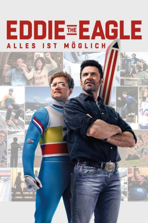

gesehen am 11.11.2016
gesehen am 11.11.2016Alternativ: Eddie the Eagle gesehen am 11.11.2016
 
 IMDB-Wertung: 7.4 / 10
IMDB-Wertung: 7.4 / 10  Metascore:
Metascore: 
Inspiriert von wahren Ereignissen ist EDDIE THE EAGLE- ALLES IST MÖGLICH eine Feel-Good-Geschichte über Michael "Eddie" Edwards (Taron Egerton), einen ungewöhnlichen aber überaus mutigen britischen Skispringer, der niemals aufhört, an sich selbst zu glauben - obwohl eine ganze Nation ihn bereits als Versager abgestempelt hat. Mit Hilfe eines rebellischen und charismatischen Trainers (Hugh Jackman) überwindet er alle Hürden und erobert die Herzen der Fans auf der ganzen Welt durch seine legendäre Teilnahme an den Olympischen Winterspielen in Calgary (1988).
Jahr: 2016
Dauer: 105 Minuten
FSK: 0
Land: England Studio: 20th Century Fox of GermanyTonspuren: DTS - ,
Untertitel: Deutsch, Englisch,
Auflösung: 1080p (1920x808) Größe: 4331 MB
Genre: Drama, Komödie, Sport, Biographie
Regisseur:  Dexter Fletcher
Dexter Fletcher
Drehbuch: Bryan Sipe
Soundtrack:
Darsteller:
 Jo Hartley als Janette
Jo Hartley als Janette Keith Allen als Terry
Keith Allen als Terry Taron Egerton als Eddie Edwards
Taron Egerton als Eddie Edwards Mark Benton als Richmond the BOA Official
Mark Benton als Richmond the BOA Official Tim McInnerny als Dustin Target
Tim McInnerny als Dustin Target Mads Sjøgård Pettersen als Erik Moberg
Mads Sjøgård Pettersen als Erik Moberg Marc Benjamin als Lars Holbin
Marc Benjamin als Lars Holbin Iris Berben als Petra
Iris Berben als Petra Rune Temte als Bjørn the Norwegian Coach
Rune Temte als Bjørn the Norwegian Coach Hugh Jackman als Bronson Peary
Hugh Jackman als Bronson Peary Jim Broadbent als BBC Commentator
Jim Broadbent als BBC Commentator Matt Rippy als US Anchorman
Matt Rippy als US Anchorman Christopher Walken als Warren Sharp
Christopher Walken als Warren Sharp Jozef Aoki als Calgary Press , uncredited
Jozef Aoki als Calgary Press , uncredited Lasco Atkins als Calgary Press , uncredited
Lasco Atkins als Calgary Press , uncredited Anthony Chisholm als Photograper , uncredited
Anthony Chisholm als Photograper , uncredited Karl Farrer als Eddie's Neighbour , uncredited
Karl Farrer als Eddie's Neighbour , uncredited Matt Jones als Corporate Sponsor , uncredited
Matt Jones als Corporate Sponsor , uncredited Daniel Westwood als Calgary Press Reporter , uncredited
Daniel Westwood als Calgary Press Reporter , uncredited Graham Fletcher-Cook als Appleby
Graham Fletcher-Cook als Appleby Bron James als Eagle Fan , uncredited
Bron James als Eagle Fan , uncredited Martyn Mayger als Ski Sports Sponsor , uncredited
Martyn Mayger als Ski Sports Sponsor , uncreditedDatei: X:\2016(A-F)\Eddie the Eagle Alles ist möglich (2016, FSK0, 1920x808).mkv seit 26.08.2016
Festplatte: HD 2016(A-Z)
 Es gibt insgesamt 147 Filme in der Gruppe '2016(A-F)'
Es gibt insgesamt 147 Filme in der Gruppe '2016(A-F)'